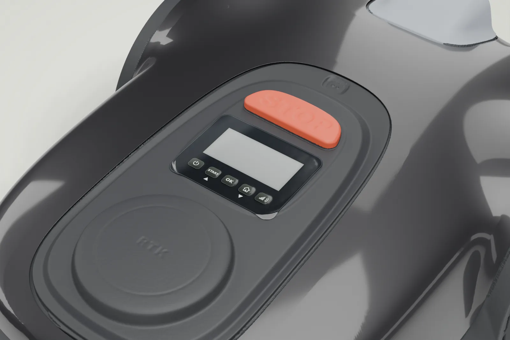
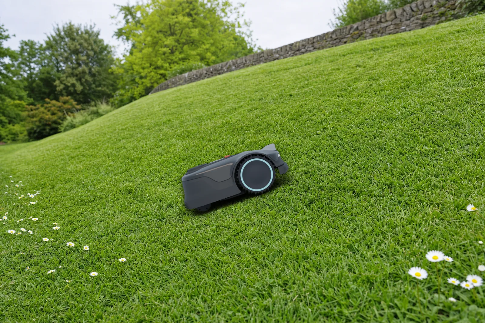
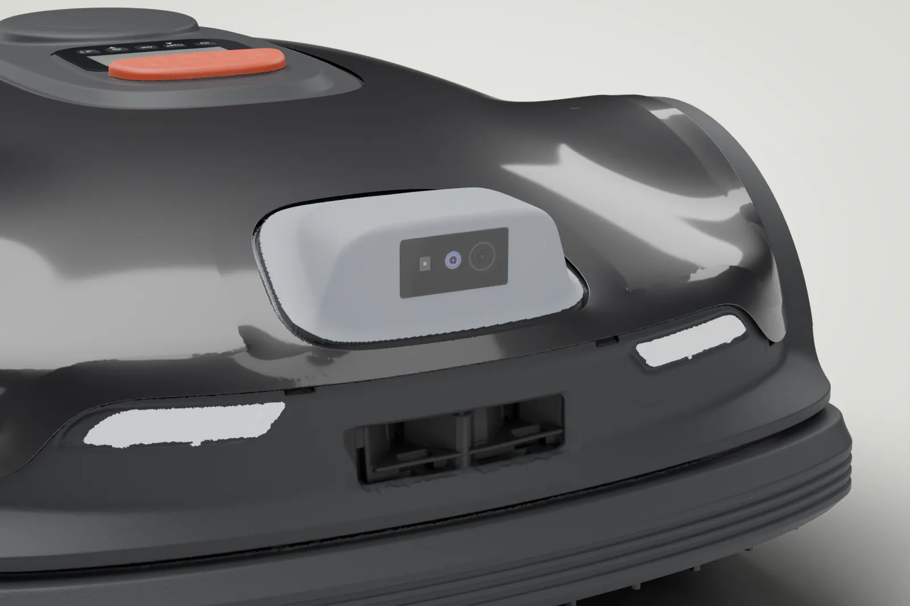
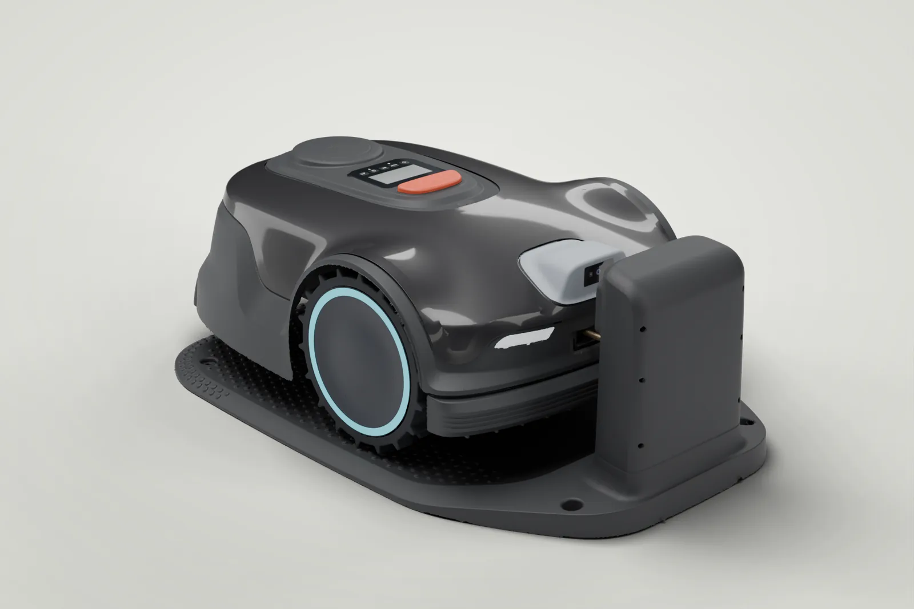
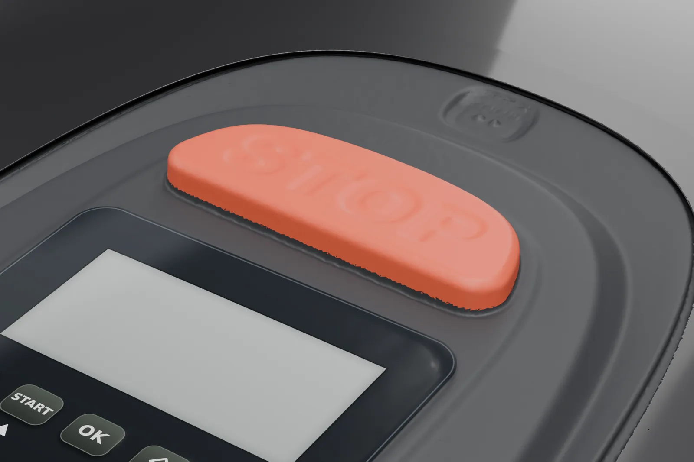
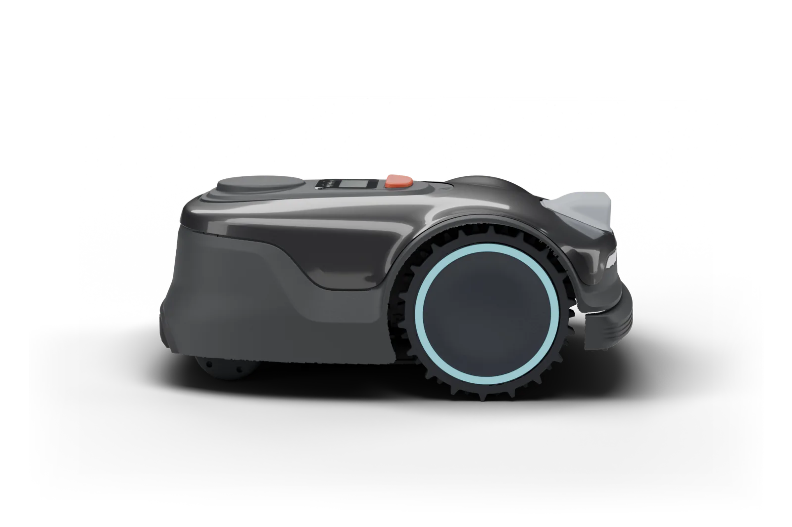

One mower, ten finishes. Every R1 has the same RTK and camera navigation, 229 mm drive wheels and self-docking.
Prices and availability will be announced at launch.
Technology
Engineered for real gardens.

No boundary wire. Just a map.
An RTK satellite receiver under the dome on top fixes R1's position to within centimetres*. You teach it the edge of your lawn once; from then on it plans its own route.
The camera in the nose watches the ground ahead, so R1 keeps to the grass and spots what doesn't belong there.

Big wheels. Steep banks.
Two 229 mm drive wheels with a deep, open tread grip on damp grass and soft ground. Each wheel has its own motor, so R1 can turn on the spot.
Designed for slopes up to 35%* (about 19°).

Sees it. Steers round it.
The sensor pod on the nose holds the camera. R1 slows for toys, hoses and garden furniture and plans its way round them.
A full-width front bumper is the last line of defence: if R1 touches something, it stops and backs away.

Charges itself. Carries on.
When the battery runs low, R1 drives back to the dock and lines up its nose with the two charging pins. Once it is charged it returns to the row it was mowing.
The dock plate gives the wheels a clean, level place to park.

One press. Blades stop.
The large red STOP key sits on top where anyone can reach it. Press it and the blades stop straight away.
The display and keypad next to it let you start, pause and check R1 without a phone.
229mm drive wheels
35% slopes*
1000m² lawns*
0boundary wire
Is R1 right for your garden?
Tell us about your lawn. We'll estimate how long R1 takes and whether it's a good fit.
Set it up once. Then forget it.
1
Teach the edge
Drive R1 round the edge of your lawn once. RTK records the boundary — nothing to bury.
2
Let it mow
R1 trims the edge first, then fills the lawn in parallel rows that overlap slightly, so no strips are missed.
3
It parks itself
Low battery or finished, R1 returns to the dock, charges and picks up where it stopped.
Why R1
No wire
RTK and vision replace the buried perimeter wire.
Sees obstacles
A front camera plus a full-width bumper.
Grips slopes
229 mm wheels, one motor each, 35%* banks.
Self-charging
Back to the dock on its own, then back to work.
R1 specifications

659 mm long474 mm wide262 mm high
Mowing
Cutting width
200 mm
Cutting height
30–60 mm*
Lawn size
up to 1,000 m²*
Mowing rate
about 130 m²/h*
Navigation
Positioning
RTK satellite receiver
Vision
Front camera in the sensor pod
Boundary wire
Not needed
Drive
Drive wheels
2 × Ø229 × 54 mm, deep tread, one motor each
Castors
2 × Ø100 mm, rear
Max. slope
35%* (about 19°)
Power
Mowing per charge
about 90 min*
Charging time
about 75 min*
Charging
Self-docking, two-pin dock
Controls & safety
On the mower
Display, keypad, red STOP key
Collisions
Full-width front bumper
Size
L × W × H
659 × 474 × 262 mm
* Design targets, to be confirmed by testing. Images are renders of the design.
Questions, answered
Do I need to lay a boundary wire?
No. R1 uses RTK satellite positioning and its front camera. You drive it round the edge of the lawn once to record the boundary.
How big a lawn can R1 look after?
R1 is designed for lawns up to about 1,000 m²*. Use Help Me Choose to estimate the mowing time for yours.
Can it handle slopes?
Yes. The 229 mm drive wheels have a deep tread and their own motors; R1 is designed for slopes up to 35%*, about 19°.
What happens when the battery runs low?
R1 drives back to its dock, charges, and then continues from where it stopped.
How do I stop it quickly?
Press the red STOP key on top. The blades stop straight away.
Which colours are available?
Ten: Obsidian Black, Silver Arrow, Le Mans Stripes, Signal Yellow, Sapphire Blue, Crimson, Racing Green, Sage & Pine, Rally Sand and Taro Lilac.